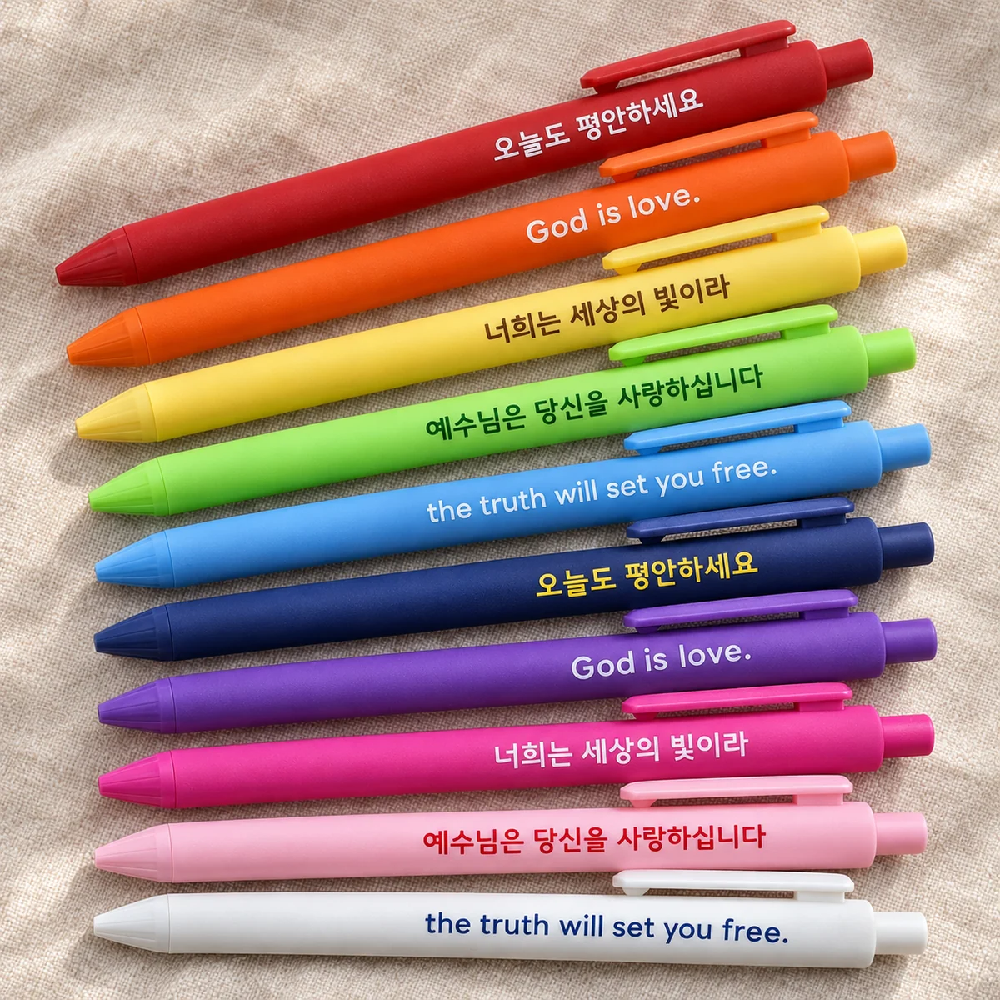
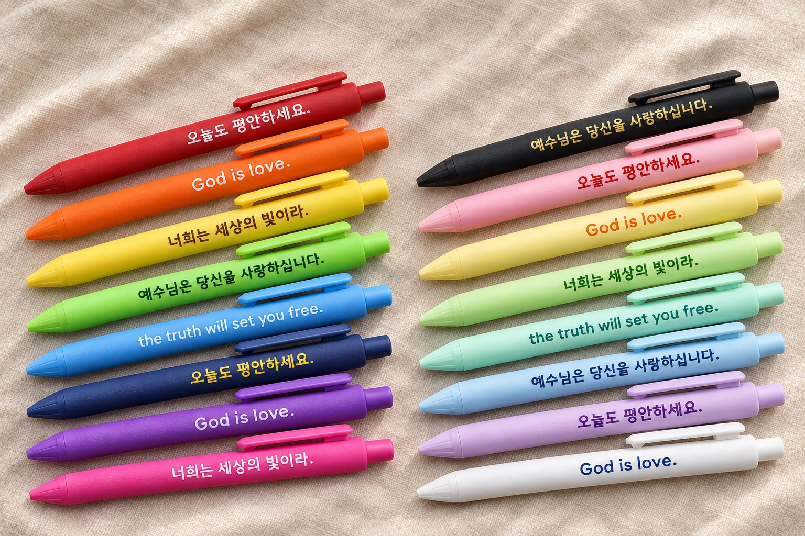

말씀 볼펜
16가지 색 볼펜에 교회 이름이나 말씀 한 구절을 원하는 색으로 인쇄해 드려요.
| 1 ~ 50개 | 440원 |
|---|---|
| 51개 이상 | 390원 |
| OPP 낱개 포장 | 개당 +50원 |
- 심 굵기0.7mm
- 방식노크식
- 볼펜 색16가지
- 인쇄컬러 인쇄 · 문구 한 줄
- 인쇄 영역가로 100 × 세로 4mm
제작 에디터에서 색 · 문구 · 글씨체를 골라 바로 시안을 만들 수 있어요.
COLOR
볼펜 색 16가지

이렇게 인쇄돼요
- 인쇄 영역볼펜 몸통 가운데, 가로 100 × 세로 4mm (그림의 점선)
- 문구한 줄. 길면 영역에 맞춰 글자가 작아져요.
- 인쇄 위치앞 · 중간 · 뒤 맞춤 가운데 선택
- 글씨체19종 — 고딕, 명조, 손글씨, 둥근 글씨까지
- 글씨 색50가지 + 그라데이션 10종
PHOTO